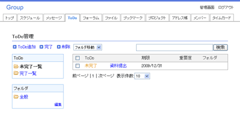

期限や重要度が設定できるToDoの管理
メンバーにToDoを送信することもできます。
期限や重要度を設定して登録します。
未完了のToDoはトップページにも表示されます。
期限を超過したToDoは警告が出ます。
完了したToDoは完了一覧に表示されます。
フォルダを作成し、ToDoをフォルダに移動して分類します。
フォルダでは完了と未完了のToDoが分かりやすく表示されます。
メンバーのToDoを送信することで、ToDoを共有できます。
ToDoの詳細にメンバーの完了・未完了が表示されます。